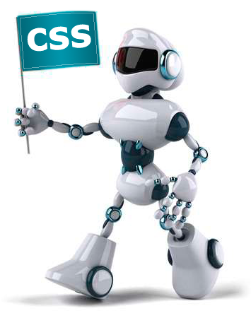

Цель создания CSS
 CSS используется создателями веб-страниц для задания цветов, шрифтов, расположения отдельных блоков и других аспектов представления внешнего вида этих веб-страниц. Основной целью разработки CSS являлось разделение описания логической структуры веб-страницы (которое производится с помощью HTML или других языков разметки) от описания внешнего вида этой веб-страницы (которое теперь производится с помощью формального языка CSS). Такое разделение может увеличить доступность документа, предоставить большую гибкость и возможность управления его представлением, а также уменьшить сложность и повторяемость в структурном содержимом. Кроме того, CSS позволяет представлять один и тот же документ в различных стилях или методах вывода, таких как экранное представление, печатное представление, чтение голосом (специальным голосовым браузером или программой чтения с экрана), или при выводе устройствами, использующими шрифт Брайля.
Преимущества CSS
Простота использования.Каскадная таблица стилей (CSS) позволит быстро изменить стиль вашего сайта, так, как все стили пишутся в одном .css файле (иногда таких файлов бывает несколько), которые можно повторно использовать для нескольких страниц одновременно. Например, чтобы изменить размер или цвет всех Заглавий на всех ваших страницах, вам не придется лезть в каждую страницу по отдельности, выискивать там код и изменять его, вам будет достаточно лиш добавить в свою таблицу запись: h1{font-size:12pt; … }, и данное свойство будет работать для всех страниц к которым подключена CSS.
Значительное уменьшение размера сайта. Так, как мы отделяем контент (HTML код) от визуального оформления (CSS) это позволяет нам в несколько раз уменьшить размер HTML-страницы. Также вам следует знать, что после того, как вами был загружен сайт, браузер кэширует CSS-файл и в последующем стили будут используются для всех остальных страниц, то есть не придется загружать их вновь и вновь.
Дополнительные возможности стилизации. Например, с помощью стилей можно сделать так, чтобы один блок текста, обтекал другой текст (например, это подойдет для меню), а можно сделать и так, чтобы меню было зафиксировано и оставалось на месте при прокрутке сайта.